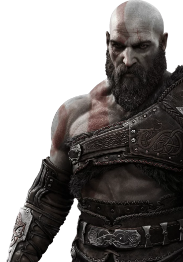
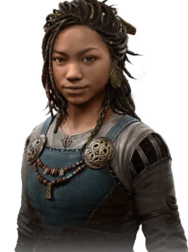
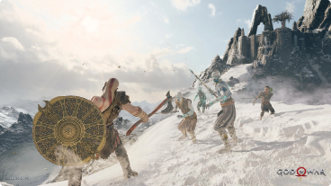
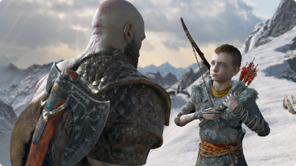
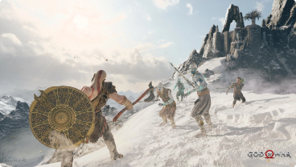
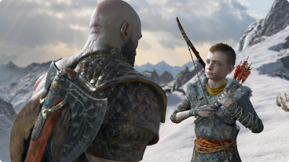

Um mundo mais sombrio e primitivo
Do mármore e colunas ornadas do Ólimpo para as florestas, este é um reino novo, com suas próprias espécies de criaturas, monstros e deuses
Os maiores heróis dos Noves Reinos

Kratos

Atreus

Freya

Angrboda
 



Lute no Reino Nórdico
Com a vingança contra os deuses do Olímpo em um passado distante, Kratos agora vive como um mortal no reino dos deuses e monstros nórdicos. É nesse mundo duro e implacável que ele deve lutar para sobreviver... e ensinar seu filho a fazer o mesmo.
Armas Lendárias
Poder Rúnico Refinado
Novas habilidades permitem que Kratos use seu machado de maneira inéditas
Saiba Mais
Mais do que um garoto com um arco
Atreus aprimorou suas habilidades de arquearia para desferir novos ataques
Saiba Mais